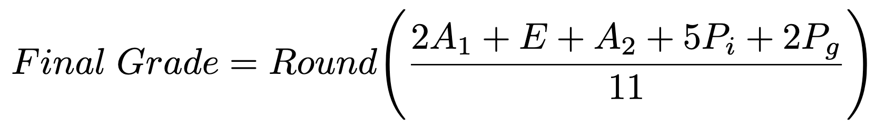

The final grade for the course is computed as a weighted average of the following Ladok modules graded with 3, 4 and 5.
| Symbol | Code | Ladok module | Credits |
|---|---|---|---|
| A1 | 2000 | Assignments (part 1) | 2 |
| E | 3000 | Written exam (part 1) | 1 |
| A2 | 5000 | Assignments (part 2) | 1 |
| Pg | 6000 | Project (group) | 2 |
| Pi | 7000 | Project (individual) | 5 |
The credits for each module are used as weights and the average is computed using the round half up method. This is the formula for the final grade.

For the Ladok module Assignments (part 1), in addition to the mandatory assignments you can earn higher grade points by solving higher grade assignments. In total there are 10 higher grade points. For grade 4 you must score at least 4 points. For grade 5 you must score at least 8 points.
You can use the final grade calculator below to investigate how different combinations of the individual assignment grades and higher grade points affects the final grade.